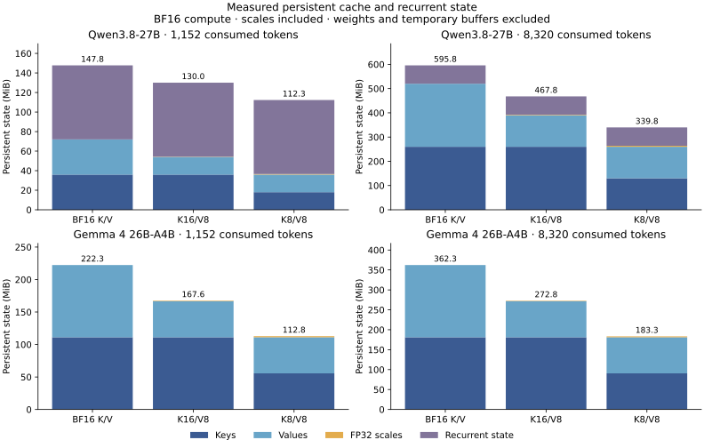

Asymmetric KV:
results and data
In-process batch-throughput evidence covers Qwen3-8B at 8K input and batch 32, in two weight formats. The completed dense HTTP studies and additional model transfers have separate quality, performance and reliability outcomes. This page collects the comparison scopes, machine-readable data and the Qwen3.8/Gemma 4 symmetric-versus-asymmetric reference.
Complete-request throughput
One H100 SXM 80 GB, FP16 compute, in-process execution, 128 forced output tokens. Native controls store FP16 K and V. The candidate physically stores FP16 K and E4M3 FP8 V. Each comparison matches its model, inputs, scheduler and KV byte budget.
| Model / workload | Native FlashInfer | Native FA3 | Verdict |
|---|---|---|---|
| Qwen3-8B AWQ · 8K / batch 32 | +3.4483% | Not established by this study | Qualified versus FlashInfer |
| Qwen3-8B FP16 · 8K / batch 32 | +3.5458% | Not established by this study | Qualified versus FlashInfer |
| Qwen3-8B FP16 · 1K / batch 32 | +0.9657% | −0.3502% | No qualified gain |
Each 8K row has ten fresh confirmation blocks, all positive, with Holm-adjusted p = 0.001953125 and a median gain above 1%. The screen is a median-effect threshold, not a confidence-bound guarantee of at least 1%. AWQ uses a 48 GiB KV budget and dense 8K uses 40 GiB. Rows compare to their own controls, not to each other.
The 1K study uses twelve confirmation blocks and a 32 GiB pool. Its FlashInfer sign test passes, but +0.9657% misses the 1% median screen. The FA3 comparison is negative. The strict CUDA-event reader failed; a disclosed host-endpoint replay supports this scoped request-throughput analysis, not per-step GPU latency. Full comparisons and timing-audit limit.
The preceding compact route is an engineering comparison: current 8K routing improves AWQ by 4.88% and dense by 4.73%. FlashInfer is unchanged across those comparisons. The change routes eligible fresh-prefill subsets efficiently when decode requests are also present. At batched 1K, the preceding route already handles the entire fresh cohort.
Quality and model coverage
Quality qualification checks prediction loss, retrieval and GSM8K. The preservation rule counts native-correct to candidate-wrong transitions; gains elsewhere do not cancel losses. A pass is specific to the task, model, scales and execution path.
| Tested path | Candidate | Native FlashInfer | Native FA3 | Qualification |
|---|---|---|---|---|
| Qwen3 AWQ · in process | 1,201 | 1,199 | Separate study | Pass |
| Qwen3 FP16 · in process | 1,178 | 1,177 | Separate study | Pass |
| Qwen3 FP16 · 8K HTTP | 1,179 | 1,175 | 1,175 | Pass against both |
| Qwen3 FP16 · 1K HTTP | 1,179 | 1,176 | 1,173 | Pass against both |
| Phi-4 FP16 · model transfer | 1,253 | 1,253 | 1,252 | Pass against both |
| Ministral 3 8B · plain-text task | 827 | 839 | 842 | Preservation not established |
Phi-4 passes production and quality at 1K/batch 32 and 8K/batch 16 with its own geometry port, scales and 32 GiB pool. It has no confirmed speed gain to advertise. The source and installation differ from the Qwen3 quick start. Exact original-order repetition passes; the earlier native rotation failures remain disclosed.
Ministral 3 passes production, prediction-loss and retrieval checks, but its frozen GSM8K plain-text task exceeds the 2% loss-bound limit against both controls. Prompt formatting and the frozen parser limit interpretation. Secondary scores are retained and do not replace the failed gate. No performance confirmation follows.
Qwen3.5-9B and Gemma 4 12B pass their tested native calibration paths, not an asymmetric transfer. Qwen3.5 shares cache backing across recurrent and attention layers. Gemma 4 combines sliding/global attention, larger head dimensions and soft-capped logits. Their current asymmetric configurations are unsupported, not measured quality failures.
Dense Qwen3 HTTP: client-visible comparisons
Dense FP16 Qwen3-8B passes actual-worker NLL, retrieval, full GSM8K and serial-parity qualification at both contexts. Each context uses one H100 SXM 80 GB, 22 CPU threads, ten counterbalanced primary blocks and three separate descriptive runs. All paths generate 128 forced output tokens. The native controls store FP16 K and V; the candidate stores FP16 K and FP8 V.
| Input / arm | Closed-32 completed req/s | Near offered req/s | Near arrival-to-EOS p95 seconds | Failed primary requests |
|---|---|---|---|---|
| 8K · K16/V8 | 3.3900 | 2.9 | 13.809 | 4 |
| 8K · Native FlashInfer | 3.2747 | 2.9 | 12.205 | 3 |
| 8K · Native FA3 | 3.3361 | 2.9 | 11.266 | 5 |
| 1K · K16/V8 | 16.9532 | 14.9 | 2.042 | 0 |
| 1K · Native FlashInfer | 16.7687 | 14.9 | 2.039 | 0 |
| 1K · Native FA3 | 16.9567 | 14.9 | 1.917 | 0 |
At 8K input, closed-concurrency-32 throughput changes +3.56% versus FlashInfer and +1.65% versus FA3. At the shared near load of 2.9 requests/s, arrival-to-end-of-stream p95 latency changes +4.34% and +12.65% respectively (positive latency change means slower).
At 1K, closed-32 throughput is +1.01% versus FlashInfer and -0.26% versus FA3. At 14.9 offered requests/s, p95 latency is +0.19% and +5.83% respectively. The small FlashInfer throughput gain comes with no demonstrated tail-latency gain.
Frozen-rule outcomes: 8K — No unqualified serving gain established. 1K — closed-32 throughput gain versus FlashInfer. 8K retains 12 failed primary requests; the frozen validity rule blocks an unqualified gain claim.
These absolute-rate medians are descriptive. The decision uses paired effects within each block, all four declared hypotheses per context, Holm correction, median effect screens and the validity requirement. Full comparisons, uncertainty, all load points, queues, profiles and exact reproduction.
AWQ HTTP preservation was not established
The tested Qwen3 AWQ HTTP worker passes prediction-loss and retrieval checks but does not establish GSM8K preservation. The one-sided 95% upper bounds on correct-to-wrong loss probability are 2.196% versus native FlashInfer and 2.373% versus native FA3, above the frozen 2% limit. No AWQ HTTP performance confirmation was run. This does not invalidate the separately qualified in-process batch result.
Read the AWQ HTTP task and paired losses. The measurement implementation records client arrivals, stream events, queue waits and failures.
Physical memory, not simulated compression
K16/V16 needs four payload bytes per key/value element pair; K16/V8 needs three. For equal token slots, the persistent payload falls 25%. At equal KV bytes, available slots grow by about one third, subject to page rounding. The layout does not allocate a full FP16 shadow value cache.
| Model / budget | Native K16/V16 | K16/V8 | Extra staging |
|---|---|---|---|
| Qwen3 dense · 40 GiB | 291,264 | 388,352 | 256 MiB payload |
| Phi-4 · 32 GiB | 167,760 | 223,696 | 320 MiB payload |
Weights, wrapper buffers, staging, metadata, graphs and allocator overhead remain. These slot counts do not establish a new maximum resident request batch or a 25% total-GPU-memory reduction. Full memory accounting and the clean installation receipt retain actual allocation and driver measurements.
The historical kernel comparison also retains a different finding: ordinary symmetric K8/V8 was 16–19% faster than K16/V8 at the tested bandwidth-bound shapes within one SM90 Tensor Core family, with a batch-one reversal. That is a standalone kernel comparison, not the current complete-request throughput result. Quality qualification still determines whether symmetric storage is usable.
Transformers reference · symmetric versus asymmetric
Qwen3.8 and Gemma 4: quality and persistent state.
Qwen3.8-27B and Gemma 4 26B-A4B were tested with native BF16 K/V, BF16 keys plus FP8 values (K16/V8), and symmetric FP8 K/V (K8/V8). Each arm uses the same original BF16 weights and official model implementation. This Transformers reference stores actual FP8 cache tensors with independent FP32 scales per token and head, then reconstructs attention inputs to BF16 temporarily.
| Model | K16/V8 quality | K8/V8 quality | State saved K16/V8 / K8/V8 |
|---|---|---|---|
| Qwen3.8-27B | Pass | Pass | 21.48% / 42.96% |
| Gemma 4 26B-A4B | Not established: 1K loss bound fails | Not established: 1K and 8K loss bounds fail | 24.70% / 49.39% |
Qwen: both candidates pass every preservation limit, while symmetric FP8 saves twice as many state bytes. Gemma: both pass math and retrieval, but neither passes the joint preservation rule. A failed certificate does not prove general quality harm.
All 1,319 GSM8K test questions were retained. Native / K16/V8 / K8/V8 correct counts are 1,268 / 1,273 / 1,277 for Qwen and 1,270 / 1,272 / 1,271 for Gemma. The direct candidate comparison does not establish a math-accuracy advantage for either compressed format (Holm-corrected p = 0.775 and 1.0). Every model and arm scores 100/100 on each of the 1K and 8K retrieval panels.
The loss rule requires a 98.75% one-sided upper bound no greater than +1% relative mean negative log-likelihood. Gemma’s 1K upper bounds are +5.735% for K16/V8 and +4.360% for K8/V8. At 8K they are +0.903% and +1.664%. Qwen’s largest upper bound is +0.134%. Each context uses 32 paired documents, 128 scored targets per document and 100,000 bootstrap resamples.
Prediction loss uses unframed Wikipedia text; math and retrieval use official chat templates with thinking disabled. Absolute loss is not comparable across models or tokenizers. The fixed inputs, parser, margins, truncations and outliers remain unchanged. A pass/fail difference between preservation tests is not proof of superiority.
Measured persistent cache and recurrent state

Scope: the two candidates have different memory budgets, and no equal-budget K8/V16 control was tested. This quantizer and runtime differ from the optimized serving recipe. The study establishes no fused-backend support or production-speed benefit. All 9,226 saved generation outputs and physical-cache accounting passed validation; 13 CPU cache tests also pass.
Complete results, bounds and failure diagnostics → · Pinned checkpoints, methods and reproduction commands →
Capacity planning and related integrations
The upstream integration reference separates FlashInfer and vLLM serving dependencies from LMCache’s merged split-SerDes foundation and ongoing MP-mode storage series.
For equal-sized K and V tensors, raw payload ratios are 4:3:2 for K16/V16, K16/V8 and K8/V8. The symmetric K8/V8 option still needs its own quality and performance qualification. Byte arithmetic is not evidence that a representation is faster or safe.
The public aiconfigurator byte-accounting branch and InferenceX dtype-provenance branch keep representation explicit in planning and records. They are separate integration work, not additional serving benchmarks. Asymmetric cartridge KV has its own learned-prefix quality and sharing results.